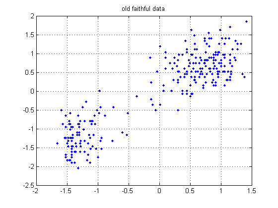
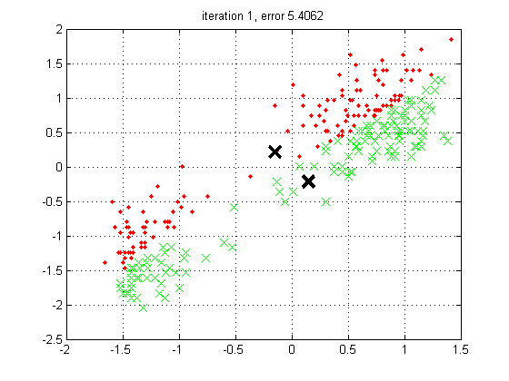
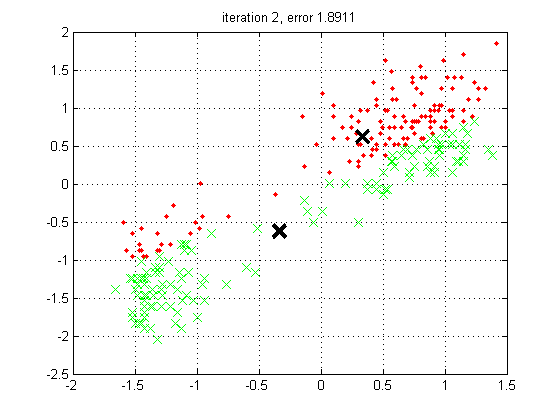
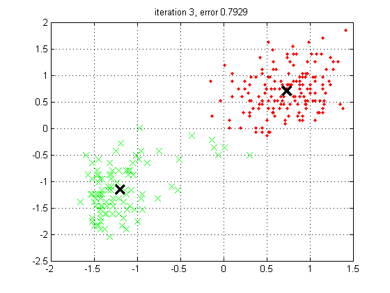
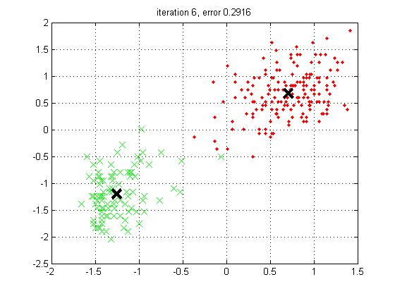

Contents
function kmeansDemoFaithful
Run Kmeans on the old faithful data
X = load('faithful.txt');
X = standardizeCols(X);
figure; plot(X(:,1), X(:,2), '.', 'markersize', 10)
title('old faithful data')
grid on
printPmtkFigure('faithful');
mu = [-1.5 1.5; 1.5 -1.5]';
setSeed(4);
K = 2;
[mu, assign, errHist] = kmeansFit(X, K, 'plotfn', @plotKmeans, ...
'-maxIter', 10, '-mu', mu);
iteration 1, error 5.4062
mu =
-0.1475 0.1453
0.2173 -0.2142
iteration 2, error 1.8911
mu =
0.3360 -0.3360
0.6209 -0.6209
iteration 3, error 0.7929
mu =
0.7311 -1.1996
0.7048 -1.1565
iteration 4, error 0.2935
mu =
0.7194 -1.2374
0.6863 -1.1804
iteration 5, error 0.2918
mu =
0.7146 -1.2488
0.6802 -1.1887
iteration 6, error 0.2916
mu =
0.7084 -1.2578
0.6755 -1.1994
    
end
function plotKmeans(data, mu, assign, err, iter)
fprintf('iteration %d, error %5.4f\n', iter, err);
mu
[K D] = size(mu);
figure;
symbols = {'r.', 'gx', 'b', 'k'};
for k=1:K
members = find(assign==k);
plot(data(members,1), data(members, 2), symbols{k}, 'markersize', 10);
hold on
plot(mu(1,k), mu(2,k), sprintf('%sx', 'k'), 'markersize', 14, 'linewidth', 3)
grid on
end
title(sprintf('iteration %d, error %5.4f', iter, err))
if iter==2, printPmtkFigure('kmeansDemoFaithfulIter2'); end
end